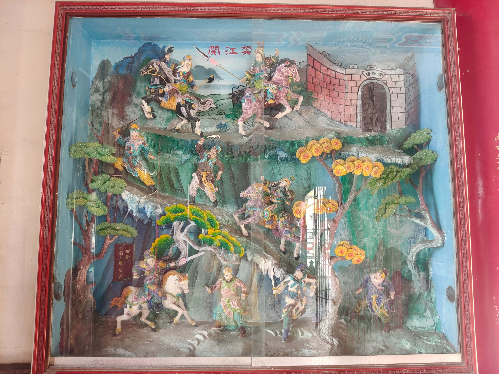

樊江關
會說話的石頭

圖 樊江關
樊江關
“樊江關”這齣戲又稱為“姑嫂比劍”，薛金蓮、樊梨花這對姑嫂，對於出兵時間點有不同的看法，心急的薛金蓮出手去打統兵元帥樊梨花，引發軒然大波，互不相讓的故事。 唐太宗率領薛仁貴御駕親征，被困在西遼鎖陽城。柳迎春（薛仁貴之妻、也是樊梨花的婆婆）奉聖命到樊江關，調派樊梨花帶兵前來救駕。樊梨花正要點動人馬，正好薛金蓮押糧草來到樊江關。樊梨花不敢怠慢，禮貌相迎。禮敬小姑，為的是建立良好的關係。何況樊梨花新嫁入薛家，很多薛家的習慣，還得靠小姑指點，她渴望得到自家人的支持，這也是一種“先安內再攘外”的意思。 可是薛金蓮卻不這樣想，薛金蓮看到桌上父親薛仁貴的求救信，認為嫂嫂樊梨花不積極出兵，拖拖拉拉的延誤軍情，父親的命可能都會不保。她很不高興，先是言語擠兌，繼之動起武來。薛金蓮直爽的個性，不能忍耐，不考慮後果，鬧起了矛盾，這豈不是浪費更多的時間。 最後柳迎春聞訊，急忙跑出來呵止，故意讓樊梨花負氣收回發兵救援的將令，薛金蓮無奈，只好再三向嫂請罪，最後姑嫂言歸於好，同往解圍。開始的衝突變成祥和，兩人同心，其利斷金；樊梨花、薛金蓮兩人前嫌盡棄，攜手同心，贏得戰爭的勝利。
資料來源：維基百科，自由的百科全書